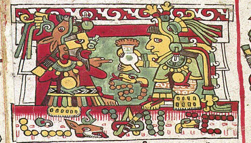
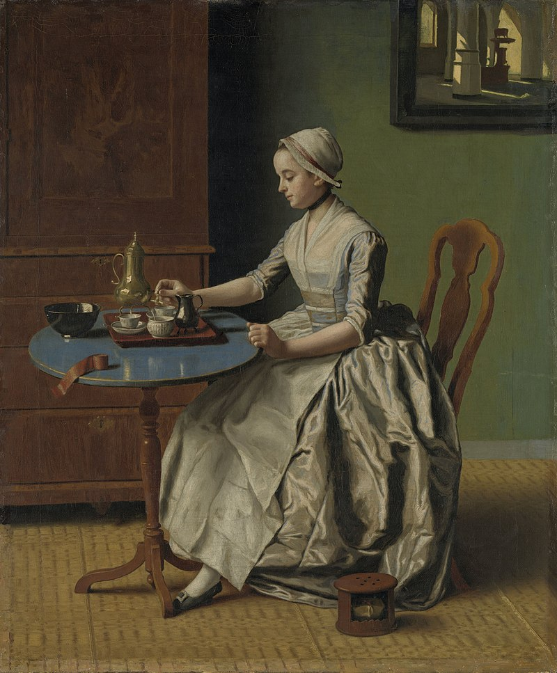
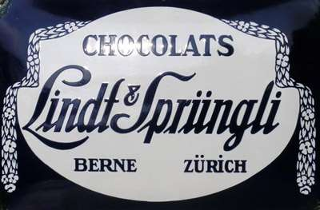

De nos jours, le chocolat est une douceur courante, consommée en boisson, en tablette ou en pâtisserie. Cependant, le chocolat était à l’origine consommé sous forme de boisson amère lors de cérémonie religieuse.
Comment est-on passé d'une boisson amère à la sucrerie que l’on connait aujourd’hui ?
 La culture du chocolat, appelé alors xocoatl, remonte à l’époque des Olmèques (-1 000 avant J-C), qui cultivaient les fèves de cacao pour un usage médicinal ou religieux.
Cette culture s’est ensuite transmise aux Mayas, qui créèrent une première boisson à base de chocolat mélangé avec du piment et de la poudre de maïs, ce qui donnait une boisson mousseuse au goût amère. Toujours utilisé lors des cérémonies religieuses, le chocolat fut ensuite utilisé couramment lors de festival, en offrande lors des enterrements, en médecine… Mais, surtout, le chocolat était une monnaie d’échange pour acheter des vêtements, de la nourriture, …
Les aztèques, après avoir conquis la majorité de la Mésoamérique (1 200 après J-C), ont alors consommer à leur tour du chocolat provenant des territoires conquis. Le chocolat resta une monnaie d’échange, jusqu’à l’arrivée des conquistadors en Amérique.
 C’est Christophe Colomb qui rapporta du chocolat en Espagne au début du XVIème siècle. Cependant, le chocolat ne connut le succès que bien plus tard dans le siècle, lorsqu’il fut introduit à la cour du roi d’Espagne.
Le chocolat s’est ensuite répandu à travers l’Europe : l’Espagne en exporta vers les autres pays tandis que d’autres pays colonialistes comme la France et l’Angleterre s’approvisionnaient dans leurs propres colonies.
Cependant, comme les européens n’étaient pas satisfait de la boisson amère des aztèques, ils commencèrent à créer leurs propres variantes, en le buvant chaud mélangé avec de la cannelle, du miel et d’autres épices.
A cette époque, le chocolat était très cher et donc réservé aux riches. Cette tendance continua jusqu'à la Révolution industrielle.
Le cacao était produit et moulu entièrement à la main par les esclaves mésoaméricains et africains dans les colonies européennes, ce qui fait que la production était lente et donc l’offre n’était pas suffisante pour répondre à la demande des clients occidentaux. Le chocolat était donc difficile d’accès et réservé aux riches.
Cependant, au début du XVIIIème siècle, le premier moulin mécanique est inventé en Angleterre et la production de chocolat est donc grandement accélérée.
C’est au XIXeme siècle qu’apparaissent les premières grandes marques de chocolat qui apportent alors de nouvelles méthodes de transformation du chocolat:
- En suisse, Cailler (1819) ainsi que Lindt (1845) avec son chocolat fondant obtenu par conchage

- Aux Pays-Bas, Van-Houten (1828) qui obtiens le premier brevet de chocolat en poudre
- Nestlé invente le chocolat au lait par la méthode de condensation du lait, mais aussi Suchard, Poulain, Mars, etc. (voir Les grands chocolatiers )